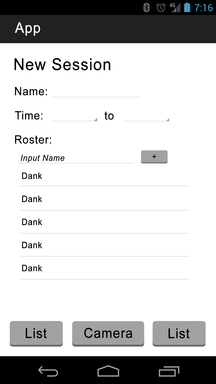
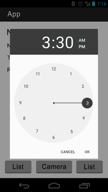
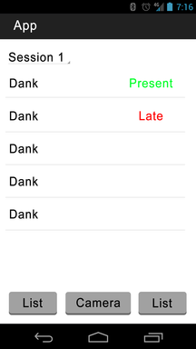
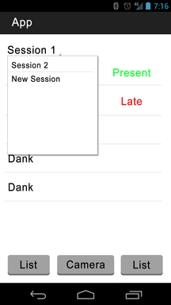
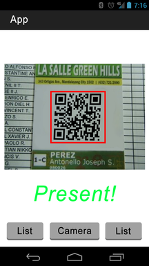

The purpose of the app is to create an easy to use attendance tracker.
Users will be able to add people to a roster, and from there, be able to record attendence.
The innovation comes from the fact that each person in a roster will be assigned a unique qr code in which the application will generate.
From there the app will generate pictures, which will be printed out on to paper. To take attendance, the student can show the instructor the qr code, and he/she will be scanned in.
But there is more. The instructor will be able to ask the whole class to hold up there qr codes.
From there, the instructor can use the camera feature and sweep the room, recording everyones attendance. The application uses the actual clock. So instructors can set
time thresholds and absenses.
The user starts at this screen, ready to take attendance!

The user starts by adding a session and a roster.
The user will set what time are students present, late or absent.
Once the session is created, here is what a session looks like.
Sessions can be switched via drop down menu.
When the user is ready to take attendence, they will use the camera.
From the start screen, the user can create tables for a class by entering student’s names as well as name of the class, and start and end times of the class.
The data tables will be created with SQLite, and when student attendance information is needed, a query to the SQLite database will be sent.
By selecting the Camera
option at the bottom of the screen the app will connect to the camera on the phone, it will also use the QR reader feature built into the app.
By taking pictures of a given QR code, a query will be sent to SQLite, the QR code , which will be the unique key will be matched to the corresponding student in the data table.
The app will then merge this with another table containing the attendance data and update the attendance data for that student.
Data is at the center of this project. The main goal of the app is to save attendance records, which will be done using SQL tables.
Each class/extracurricular activity will have the names of each student saved in a table, along with the image that corresponds to them.
All together, the fields in the tables will be Name,
Picture Code
and then a series of dates, each date being each day the user takes attendance.
Each new date field is generated every time the user takes attendance. The name of each table will be Attendance_Class, with the name in class
being the name the user enters when entering a new class.
Each table will be dynamic, meaning that it will be edit and updated often. It will be edited each time a user takes attendance.
When a user takes attendance, a new column will be added to the table (with the date of attendance being taken) and the boxes in that column will each have OnTime, Late, or Absent in them if the student is present.
This entire table will also be visible to the user after each attendance session, so that the user can see which students were present and which were absent.
The main key, which will be used to search the table for entries, will be the student’s name (both first and last name will be in a single column).
This key will be used to find students and either report their specific attendance or delete them, in the case that they are removed from the class.
The picture code
column will be used sort of as a key as well (although it is not the official key) during the attendance taking, as the app will search for a picture code
that is the same as the student’s code that is being scanned. A sample of how a table in the app will look is below.
| Name(Varchar) | Picture Code(Varchar) | 12/7/16(Enum) | 12/8/16(Enum) | 12/9/16(Enum) |
|---|---|---|---|---|
| Harrison Giovannelli | OnTime | Absent | OnTime | |
| Nam Mannucci | Absent | Absent | Absent | |
| Nick Luong | Absent | Late | Late | |
| Alex Mazon | OnTime | Late | OnTime |
Surface Views, Spinners, Clocks, Intents and other basic android content.
Although if we had to define one thing that could go wrong is the image recognition, which is the main focus of our research.